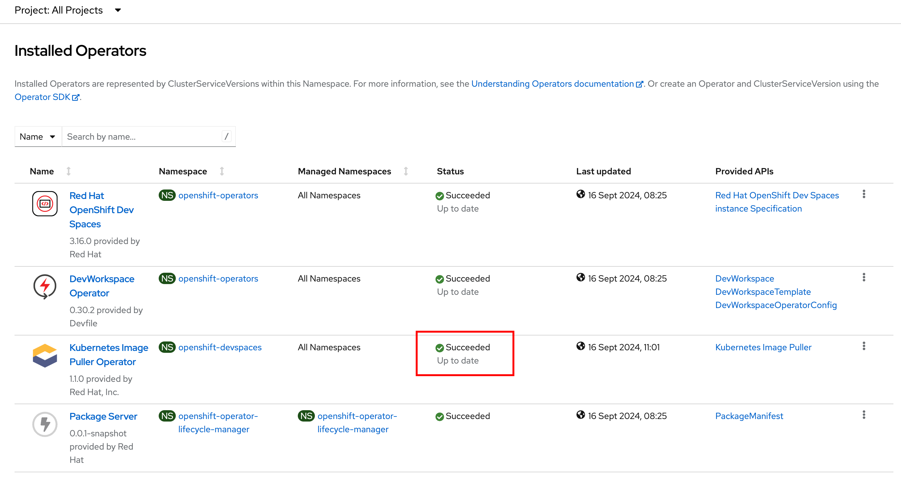
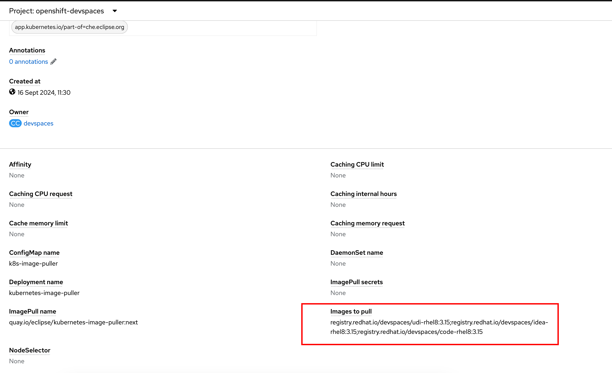
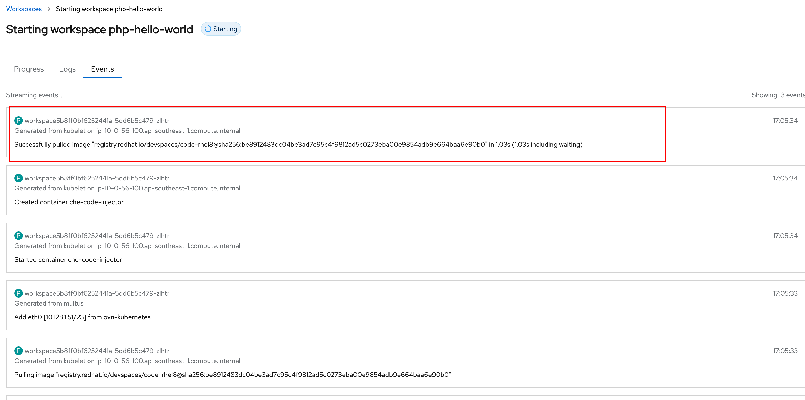

Configuring the Kubernetes Image Puller
In the previous lab, you would have noted that it took a long time for the Workspace to start and display the IDE, even if the Workspace was empty (No source code tree). Dev Spaces loads a default container image (called the Universal Developer Image - UDI) in a Workspace if you did not specify one explicitly. To reduce the start-up time of workspaces, use the Image Puller, an OpenShift component that can be used to pre-pull and cache container images.
The Image Puller is an additional OpenShift deployment that creates a DaemonSet that can be configured to pre-pull relevant OpenShift Dev Spaces workspace images on each node. These images would already be available when an OpenShift Dev Spaces workspace starts, therefore improving the workspace start-up time.
Dev Spaces, by default caches container images at the OpenShift node level. For example, if user1 downloads a 5GB container image, and if his workspace is scheduled on node1 of an OpenShift cluster, then if user2 uses the same container image in his workspace, which is also scheduled on node1, then user2 will see faster start-up time of his workspace due to caching. However, if user2 workspace is scheduled on node2, which does NOT have the container images cached, he will see increased start-up time while the 5GB image is downloaded on node2. The Kubernetes image puller solves this problem by caching a list of container images on every node in the OpenShift cluster.
|
Lab: Configure the Kubernetes Image Puller
-
Like in previous exercises, you can use
ocCLI or GitOps approach to configuring the YAML files. You will start by installing theKubernetes Image Pulleroperator on OpenShift. Prepare the followingSubscriptionresource in a file namedimage-puller-sub.yaml:apiVersion: operators.coreos.com/v1alpha1 kind: Subscription metadata: annotations: argocd.argoproj.io/sync-options: SkipDryRunOnMissingResource=true argocd.argoproj.io/sync-wave: "2" name: kubernetes-imagepuller-operator namespace: openshift-devspaces spec: channel: stable installPlanApproval: Automatic name: kubernetes-imagepuller-operator source: community-operators sourceNamespace: openshift-marketplace startingCSV: kubernetes-imagepuller-operator.v1.1.0 -
Apply the configuration file:
$ oc apply -f image-puller-sub.yaml -
Navigate to the
Operators > Installed Operatorspage of the OpenShift web console, selectopenshift-devspacesin theProjectdrop-down, and verify that the Kubernetes Image Puller operator is installed successfully.Figure 1. Kubernetes Image Puller Operator Installed -
You need a list of container images that you need the image puller to pre-pull before workspace start. Navigate to the following URL and grab the list of container images. You can also add other third party and custom container images to the list.
registry.redhat.io/devspaces/udi-rhel8:3.15 registry.redhat.io/devspaces/idea-rhel8:3.15 registry.redhat.io/devspaces/code-rhel8:3.15 -
Edit the
devspacesCheCluster CR YAML configuration and configure the image puller:apiVersion: org.eclipse.che/v2 kind: CheCluster metadata: name: devspaces namespace: openshift-devspaces annotations: argocd.argoproj.io/sync-options: SkipDryRunOnMissingResource=true argocd.argoproj.io/sync-wave: "3" spec: components: ... devfileRegistry: {} *imagePuller: enable: true (1) spec: images: >- (2) registry.redhat.io/devspaces/udi-rhel8:3.15;registry.redhat.io/devspaces/idea-rhel8:3.15;registry.redhat.io/devspaces/code-rhel8:3.15 ...1 - Enable the image puller 2 - List of images to pre-pull on OpenShift nodes separated by semi-colon (";") -
Navigate back to the
Operators > Installed Operatorspage in the OpenShift web console. ClickKubernetes Image Pullerin theProvided APIscolumn. Observe that a new instance ofKubernetesImagePullerCR, nameddevspaces-image-pulleris now active. Click ondevspaces-image-pullerand verify that your list of images is listed in theImages to pullfield at the bottom of the screen.Figure 2. List of images to pull -
Try and launch workspaces as different users and notice that apart from the first Workspace launch, subsequent launches should be faster because the container images have been cached.
You can identify which container images are being launched in a Workspace, by clicking on the Eventstab when you launch a Workspace from the Dev Spaces dashboard.Figure 3. Container images in a WorkspaceYou can also run the following command in the namespace (in the format <username>-devspaces) created for the user, to view the container images pulled for the Workspace:
oc get events -n user1-devspaces